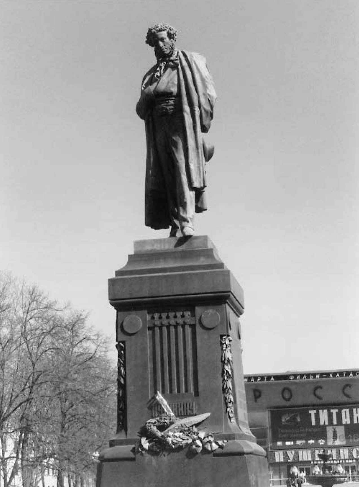
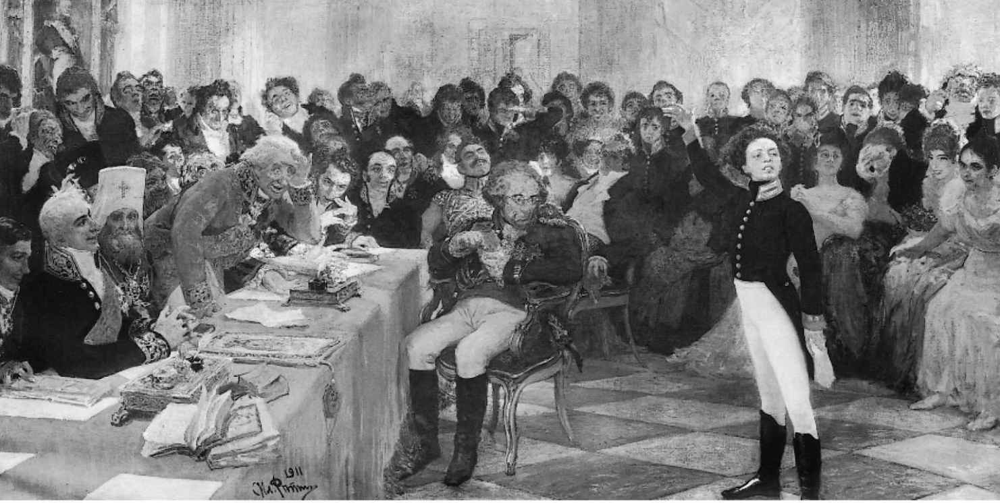
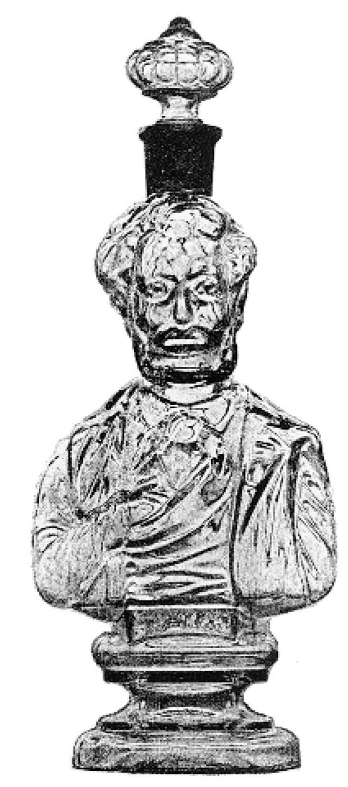
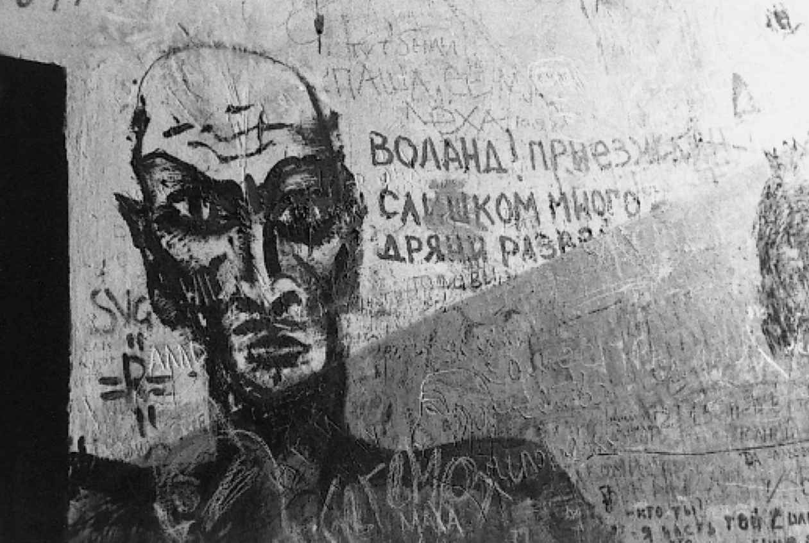
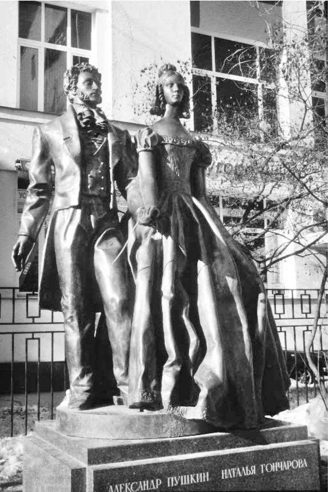

（安德烈·别雷 [5] ，1925年）
在最初通过纪念碑接触到普希金的俄国人中，有一位就是诗人玛琳娜·茨维塔耶娃。1890年代她还是个孩童时，常常被保姆带到“普希金那儿”去散步，也就是那座普希金雕塑，坐落在环绕着莫斯科老城中心的那些林荫道内环。“一个比谁都要高大黝黑的黑人”，他标记着那些孩童漫步的“终点和边界”。

图2 位于莫斯科普希金广场上的普希金雕像（A. M.奥佩库申，1880年）。这座雕像深受俄罗斯百姓喜爱，周围总有鲜花装饰：列夫·托尔斯泰觉得这座雕塑上的普希金像个男仆在向主人宣布“上菜了”，此话一出，照例让俄国人愤怒不已
普希金的那座雕塑低着头，一只手放在胸前，姿态和面部紧张专注的表情暗示他正灵感奔涌。那是个典型的浪漫主义形象，是诗人自己在他的短篇小说《埃及之夜》（1833）中唤起的“即兴诗人”和“梦想家”的形象。在那部短篇中，一个头发蓬乱、声名狼藉的外国人来到圣彼得堡，受邀参加一种上等人客厅里的文学游戏。女士们和先生们在小纸条上写下题目，扔进一个花瓶里，外国人把花瓶作为一种摸彩袋，从中取出纸条，看自己须根据怎样的题目作诗。最终，他即兴作诗的题目是克莱奥帕特拉和她的情夫们：
这里，我们看到一位艺术家正处在浪漫主义灵感乍现的瞬间。不过最好不要轻率地把这一段当成普希金隐而不宣的自传。无疑，《埃及之夜》中没有哪一处文字明确鼓励我们认定，这则天降灵感构思创作的强力神话是普希金的生平真事。而诗人的草稿表明，他的作品绝非一蹴而就，而总是在最终完稿之前经过一再的大幅修改。普希金追求的精妙声音效果需要费些力气才能达到，而既要话语直白平实，又要避免过于露骨，这样一项复杂的任务就意味着在一次次的修改中，对诗歌主题或论调的表达变得越来越隐晦。然而那个关于诗人–梦想家的传说深入人心：普希金原本是个勤奋的写作者，但这一事实似乎就是没有“普希金是个快活的天才、他的每一份诗思都是天赐灵感”那么撩人遐想。后来的俄国作家，包括阿赫玛托娃和纳博科夫，往往用铅笔和橡皮而非钢笔来写作，为的是他们的第一、第二乃至第四十四稿不至成为让后世幻灭的佐证以及多事的学术研究的资本。用诗人叶莲娜·施瓦茨（生于1948年） [6] 的话说，“没有什么改动。我的诗都是一气呵成。我无须努力，通常都是在浴缸里完成一切创作的”。
如果说这座雕像所选择的形象说明了浪漫主义对俄罗斯文学文化的持久影响，该雕像的建造却是普希金崇拜制度化的一个里程碑，在很多方面堪比英国的莎士比亚崇拜。普希金崇拜最早出现在1879—1880年诗人70周年诞辰 [7] 的纪念活动上，在1899年诗人百年诞辰庆典上愈演愈烈，到1911年普希金就读的皇村中学建校100周年时再次达到高潮，结果不仅筑造了多座雕像和多块纪念匾，还产生了不少诗歌、颂词和画作。在最后这一类中，著名的有当时首屈一指的历史画家伊利亚·列宾的巨制。那幅画作纪念的是1815年的一次著名事件——普希金朗诵自己的诗歌《皇村回忆》，据说促使年迈的新古典主义诗人加夫里拉·杰尔查文夸赞他为自己的接班人。列宾几乎把那天的场景处理成了一个俗世的圣像画。普希金的姿态，他年纪轻轻便才华洋溢与老迈的杰尔查文的连连惊叹形成鲜明对比，这些都取材自教堂里的耶稣画像，表现的是年轻的耶稣在神学辩论中的口才令贤明的圣人们瞠目结舌。然而听众——除了起身探向普希金的杰尔查文之外——的面孔却是一幅幅贪婪、自私和愚蠢的漫画，取材自弗拉芒人和荷兰人描绘的对耶稣的嘲笑。它们暗示着另一个强大的神话，即政治和社会当权者充满敌意的不解能够摧毁艺术天才的神话。

图3 《普希金在1815年1月8日的皇村中学毕业典礼上朗诵自己的诗歌〈皇村回忆〉》，伊利亚·列宾
除了在雕塑家、作家和画家的作品中占据一席之地，到1880年代，普希金崇拜还产生了商业价值，类似于如今埃文河畔斯特拉福德 [8] 或霍沃思 [9] 的日常景象。当然，当时还没有商家出售“高加索的俘虏”桌垫、“叶甫盖尼”和“达吉雅娜”马克杯或“巴赫奇萨赖汗宫的泪泉”饼干，但已经有了普希金钢笔、普希金巧克力包装纸和普希金雪茄盒，乃至普希金伏特加酒瓶。很多希望俄罗斯文学远离商业市场的专业作家和评论家看到商家营销普希金，无不感到震惊和厌恶。这似乎成了一个身处商业价值观威胁之下的文化的诸多症状之一。西吉斯蒙德·利布罗维奇在1889年的纪念活动之后出版了一套普希金肖像画册，在他看来，“对诗人备受爱戴的容貌的亵渎”恰恰说明了“广告，用魏勒的话说，可谓‘无远弗届，无知无畏，六亲不认，无孔不入’”。
俄国作家对重商主义的厌恶是19世纪末20世纪初的常态；它的影响还将继续，纳博科夫对爵士乐和杂志广告的抨击就是一例，他甚至还极富创意地在《洛丽塔》中写到亨伯特·亨伯特对美国流行文化的令人作呕的迷恋。悖论是，有时最前卫和政治思想最激进的作家，对商业压力反而最不敏感。马雅可夫斯基在1920年代中期环游俄罗斯做巡回诗朗诵时，就一心要斥责书店老板们在销售他的书时态度懒散、力度不够。1932年以后，苏联的文化集权把“商业文化便意味着低水准”作为官方信条。文化产品（书籍、绘画、音乐会、芭蕾表演）物美价廉成了让人自豪的事情。
当然，与工业生产资料不同，文化生产资料从未完全国有化。出版社的确被收归国有，但打字机、纸张、钢笔和笔记本还是要花钱去买；杂志还是会接受非作家协会会员的供稿；版税仍在支付，版权也以有限的形式继续存在。不过文化对市场力量的依赖度大大降低了。作家们的版税取决于声望（这里是指是否与党政当局趣味相投）而不是书籍销售数字；那些加入了作家协会的著名人物自有带薪挂职，跟他们写得好不好甚至写了多少关系不大。对重要作家的纪念总会采用“文雅的”（引用苏联的说法）方式，也就是故意采用一种有助于群众自我提升文化素养的方式。典型的物品是为毕业生设计的一套明信片，上面把诗人普希金和一个地球仪、一排苏联少先队队徽和共青团团徽，以及列宁全集并排列在一起。普希金胸像、微缩版普希金纪念碑或“普希金的故事”牌子的巧克力倒是可以买到，但印有普希金的T恤衫或《叶甫盖尼·奥涅金》连环画则明文规定不在出售之列。另一方面，出版社也印制普希金作品的普及版供私人阅读和课堂教学之用，普希金的雕像则在苏联各地竖立起来——凡是普希金到过的地方，哪怕他只在那里逗留了一个下午，至少会立起一座胸像。普希金博物馆雨后春笋般建立起来：米哈伊尔·左琴科曾在短篇小说《普希金》（1927）中温和地讽刺过这一做法，小说叙述者走遍列宁格勒，每搬进一处公寓，不久都会遭到驱赶，因为那里又要建一个“故居博物馆”。

图4 一种普希金形状的伏特加酒瓶，1899年为纪念诗人百年诞辰出品。客气点说，还是有些相像的，不过把普希金的音容笑貌用作消费品品牌，激怒了诗人那些热切的崇拜者们，虽说（就这里显示的这件物品而言）诗人自己或许会满怀豪情地前去消费
对其他作家的纪念也受到了苏维埃国家的鼓励，只不过都未曾像纪念普希金那样开展得如火如荼。契诃夫的莫斯科故居博物馆于1954年开馆；列宁格勒于1946年建起了一座涅克拉索夫博物馆，1971年又建起了一座陀思妥耶夫斯基博物馆（后者建成时间很晚，表明从1920年代末到1950年代中期，这位作家一直受到苏联当局的反感）。纪念活动也分等级：所有著名作家的故居外都会挂上纪念匾，为顶级和次一级作家建立名人故居，但只为顶级作家竖立雕像。比方说，在莫斯科就有陀思妥耶夫斯基（1918）、果戈理（1952年建成，作为早期一座雕像的替代品）、亚历山大·奥斯特洛夫斯基 [10] （1929）、高尔基（1951）和托尔斯泰（1956）等人的雕像。获得类似荣誉的苏联作家包括马雅可夫斯基（1958）、A.N.托尔斯泰（“苏维埃公爵” [11] ，其雕像竖立于1957年）以及亚历山大·法捷耶夫（曾长期担任苏联作家协会总书记，在赫鲁晓夫公开抨击斯大林之后，于1956年自杀；他的纪念碑建成于1972年）。为其建立“故居博物馆”的作家，除了上述之外，还包括苏联小说家尼古拉·奥斯特洛夫斯基，即长篇工厂小说《钢铁是怎样炼成的》（1935）的作者。纪念匾太多，就不一一列举了。另一个表示敬意的做法更加骇人，就是把著名作家的遗体从原来的安息之处挖掘出来——这一做法突显了死亡崇拜在苏维埃国家的重要性。他们纷纷被从家族的墓地中掘出，重新安葬在为名人设立的先贤公墓，尤其是列宁格勒的“文学步道”。（有趣的是，普希金倒免遭此劫，大概是因为他在自己最后的一些诗歌里表达出对城市公墓的强烈厌恶。他仍然安息在俄罗斯西北部的米哈伊洛夫斯科家族庄园附近的斯维亚托戈尔斯基墓园里，而他的妻子娜塔丽娅则获准留在她的第二任丈夫身旁，即列宁格勒–圣彼得堡的亚历山大·列夫斯基陵园旁边的墓地。）
如此对待作家遗体显然与“迁葬”有关，后者是指东正教在崇拜某一位圣人时必不可少的一个步骤，就是把圣人的遗骨转移到别处。对作家的尊崇变成了一种世俗宗教形式，唯物主义是马克思–列宁主义的核心信条，它表现为一个缺乏想象力的决定，即纪念物应该切实供奉离世者的遗骨。1937年周年纪念的具体安排也印证了宗教与文学的联系，《消息报》在纪念活动之前的说明文字就写道：“在耶稣升天修道院原址的钟楼顶上将会张贴一幅普希金朗读自己诗歌的巨幅肖像。修道院的正面将悬挂一张巨大的画板，上面画的是一次苏联青年游行，游行者高举着普希金的书籍和领袖们的肖像。”耶稣升天修道院之所以被选作焦点，不仅因为它的位置距离普希金雕像很近，也因为这一虔信之地很适合纪念俄罗斯最重要的诗歌殉道者。
文学如此喧嚣地成为另一种宗教（后来在斯大林时代，对统治者自身的“个人崇拜”也是如此），或许是后革命时期作家崇拜的唯一一个“苏联”独有的特征。其他很多方面只是延续了过去的做法。文学博物馆和雕像早在革命以前就开始多起来了：一个例子就是托尔斯泰的莫斯科故居在这位作家死后一年，即1911年，就对公众开放了。而在后苏联时代，“故居博物馆”也成为自我教育的游人经常光顾的地方。诚然，1991年以后，无数由私人发起的博物馆在各地建立起来（例如，在圣彼得堡的舍列梅捷夫宫有一处安娜·阿赫玛托娃曾居住过的公寓，又如玛琳娜·茨维塔耶娃位于莫斯科阿尔巴特区的故居）。1999年为纪念普希金200周年诞辰，重现了百年未见的商业衍生品（如普希金花瓶和普希金火柴盒再度面市），也出现了前所未有的产品（例如画着普希金在冥界脚踢丹特斯，继而亲吻娜塔丽娅的网络“明信片”）。但那年也竖起了许多完全遵循传统的纪念碑——例如在莫斯科的阿尔巴特区竖起了一座难看的普希金和妻子的镀金雕像，雕像中的诗人身材比娜塔丽娅略高一些，而实际上他要比妻子矮一头。（图6）
作家崇拜居然能抵御历史的兴衰变迁而热度不减，着实令人吃惊。为作家建造的纪念碑和纪念物不仅历经苏维埃政权第一个十年间席卷全国的偶像破坏而未遭摧毁，而且在后来历次捣毁雕像的疯狂运动之后仍安然伫立。整个斯大林时代，丑化陀思妥耶夫斯基的雕像一直竖立在他的出生地外；作为文学斯大林主义的工具和受益者，托尔斯泰则逃过了1961年后苏联各城市为消除他的领袖斯大林的形象而进行的纪念碑清洗；在苏联秘密警察的创始人费利克斯·捷尔任斯基的纪念碑于1991年8月被抗议苏共强硬派政变的莫斯科人推倒之后，曾经亲手签署了无数逮捕令的法捷耶夫的雕像却完好无损地继续站在底座上。唯一没有完全遵守文物保护一般规则的是尼古拉·奥斯特洛夫斯基的故居博物馆，其中一部分在1990年代末变成了一个蜡像展览馆。但毫无疑问，这一个例根本无法证明对文学人物的崇拜整体衰落了。
与俄罗斯的纪念活动相比，20世纪英国文学爱好者的纪念活动（悬挂在伦敦各个故居上的慎重的蓝色纪念匾之类的东西）相形见绌。两国纪念物在流行文化中的作用也不尽相同。说得婉转些，很少有夫妇会决定在新婚蜜月旅行时去斯特拉福德（类似一对俄国夫妇去游览米哈伊洛夫斯科的普希金家族庄园）；就连最著名的作家博物馆（例如霍沃思的勃朗特故居），跟对应的俄罗斯博物馆相比，其所吸引的游客人群也没有后者那么庞杂多元。此外，自19世纪末期以来，纪念物崇拜的存在已经变成了形式主义学者尤里·特尼亚诺夫所谓的“文学事实”，也就是现实生活中出现的、对文学创作举足轻重的一个要点。

图5 出现在莫斯科的一幅涂鸦，画的是《大师和玛格丽特》中的沃兰德在“玛格丽特屋”。此例表明文学人物已经成为通俗文化的一部分
看到对其前辈的纪念，并想到有一天他们自己也有可能会被纪念，作家们的态度有很大差别。在20世纪初的一些诗人——比如因诺肯季·安年斯基和安娜·阿赫玛托娃——看来，竖起一座雕像不失为强调过去与现在一脉相承的方式。两位诗人都曾想象过普希金的铜像复活，走在他曾用诗句赞美过的皇村街道上的情景。后来，阿赫玛托娃还在自己纪念大恐怖时期的诗歌《安魂曲》末尾提到，自己的纪念碑将来或许可以安置在列宁格勒市中心的克列斯特监狱之外。塑像将长年伫立在那里，劝诫城市的民众警惕《安魂曲》本身所记录的悲剧：
阿赫玛托娃还在她的一些作品中提及用著名作家的名字为街道命名的风俗，以此来提出一个问题：自己的生命会在未来留下什么痕迹。诗人奥西普·曼德尔施塔姆也是一样，在1935年那段被流放的凄凉岁月里，当肉体的存活变得越来越渺茫：
这条虚构的曼德尔施塔姆街的命名方式与通常的此类命名过程恰好相反，颇有荒诞感。这里选择了一条小街而不是大街，如此命名非但没有传递不朽和超越感，反而让人想起死亡和压迫。“坑洞”（俄语原文是yama ）一词是指公共墓地，如那些劳改营的犯人们死后被埋葬的地方，在口语中也指代“监狱”本身。
这条街是地狱中的一条小巷，而不是社会主义天堂的通衢大道。唯一一个效仿官方程序的细节，是街上的道路象征着被纪念之人的人生历程，然而由于二者都是“弯弯曲曲”的，结果自然是在两方面都不够体面。
然而如果说曼德尔施塔姆的诗歪曲了街道命名的创意，以此来暗示这位作家在自己的文化中处于边缘地位的话，它仍旧接受纪念碑与艺术家生平之间存在联系。只有在苏联历史上不那么森严恐怖的时段，作家们才得以与死后有来生这个概念拉开距离。在斯大林死后的那段所谓的“解冻期”，鲍里斯·帕斯捷尔纳克写了他最后一部诗集《到天晴时》（1956—1959），在其中一首诗中，他批判了把自己变成一份活遗产的想法：
到苏联后期，像帕斯捷尔纳克这样一位知名作家所能想象到的最大的回报，是可以默默无闻但体面地度过余生。但帕斯捷尔纳克的一位传记作家所说的他“精心设计的自我抹杀”，他和T.S.艾略特、罗伯特·弗罗斯特或伊丽莎白·毕肖普等西方现代主义诗人所共有的晦涩难懂，在他所在的那个文化中是较为罕见的，毕竟在那里，不管他们愿不愿意，作家们随时都有可能被抹杀。一个常见得多的策略是浮夸地拒绝官方的纪念活动，或代之以对高调自负的另一个自我加以崇拜。弗拉基米尔·马雅可夫斯基在诗人谢尔盖·叶赛宁1925年自杀后为他写的出色的悼亡诗是20世纪最伟大的俄语诗篇之一，其中有一个非同寻常的段落，既批判了官方建立纪念碑，同时又在读者的眼前竖起了另一座纪念碑：
1995年（逢作家百年诞辰），由于历史策略的一次惊人失误，在距离莫斯科市中心的普希金雕像不远处，又为叶赛宁建起了一座特别荒唐难看的青铜雕像。就这样，在作家们的反对声中，为作家们“竖起纪念碑”的做法仍在继续。
或许“惊人”一词用得不对，鉴于莫斯科那座普希金雕像的建造者们居然厚着脸皮在他所有的诗歌中选择了《“纪念碑”》一诗镌刻在雕像底座上，要知道那首诗的主题恰恰是将诗歌的活的丰碑与死沉的金石截然对立。如此说来，作品最接近普希金诗歌精神的当属反偶像的马雅可夫斯基，他认识到一旦为作家立起雕像，便不太可能充分欣赏其作品中的蓬勃活力了。在一个纪念碑的存在显得格外令人敬畏的文化中，必须把普希金从石头的重压中解放出来，让他变成一个使人可以充分发挥想象的自由空间。因此，在米哈伊尔·布尔加科夫的戏剧《普希金》（1934—1935）中，在表现最终导向普希金与丹特斯的致命决斗的一系列事件时，普希金本人始终待在后台，成为那些在他的书房门外和圣彼得堡的沙龙里谈论他的人，以及在剧院中以更高视角观看戏剧的第二观众头脑中的一个创造物。
然而，正如布尔加科夫的戏剧也意识到的那样，一个伟大作家的缺席同样可以是一股强大的文化力量，不亚于他的在场。那份臭名昭著的立体–未来主义宣言《给社会趣味一记耳光》（1912）中表达的那个先锋派的愿望，“将普希金、托尔斯泰和陀思妥耶夫斯基从现代性的汽船中抛出去”，固然攻击了伟大作家的地位，却也因为把他们视为各自时代的核心象征，反而巩固了他们的地位。大多数对普希金等以往著名作家的抨击都含混暧昧，而偶尔换另一副腔调攻击则更是如此，1860年代的激进批评家德米特里·皮萨列夫就是一例。针对普希金的《诗人与群氓》中的那句诗，“你们要把阿波罗的石像/也放在秤上去论斤两” [12] ，皮萨列夫的机智回应首先便对艺术作品的效用提出质疑。他劝诫一个他想象中的普希金的无名拥趸说：“至于你，得到升华的笨蛋，天堂之子，你用什么来加热食物，烹锅还是阿波罗的石像？”在这里，石像和普希金本人一样，成了一个隐喻，表明一切艺术活动从功利视角来看都是无用之物，但那些无论如何都忠于艺术的人，有很多都在崇拜与作家、纪念碑与文学功能之间建立联系，上述隐喻反而进一步强化了他们的这种认同。

图6 坐落在莫斯科阿尔巴特区的普希金和娜塔丽娅的双人雕像，于1999年诗人200周年诞辰时揭幕
本章讨论了纯粹字面意义上的作家纪念碑——雕像、博物馆、墙上的纪念匾，以及政府、观众和其他作家如何赋予这些纪念碑意义。下一章，我们将探讨另一种意义上的作家纪念碑：
他们实际写出的作品，以及作家本人和文学体制内的成员、出版商、评论家和审查者，如何将这些作品呈现给后代。说到审查者，他们在俄罗斯文学发展史上的作用不为人知，却至关重要。